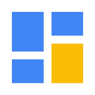

NanoDash
A tiny smart display for your desk. NanoDash is an open-source Flutter app on your computer paired with an external ESP32 panel over USB. It shows a weather clock, timers, Pomodoro, PC resource monitor, Claude Code status, media controls and more.